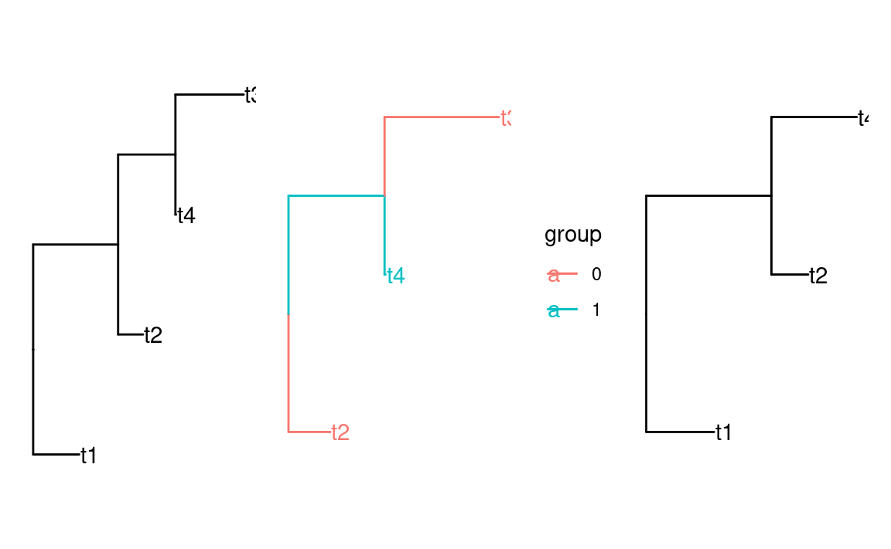
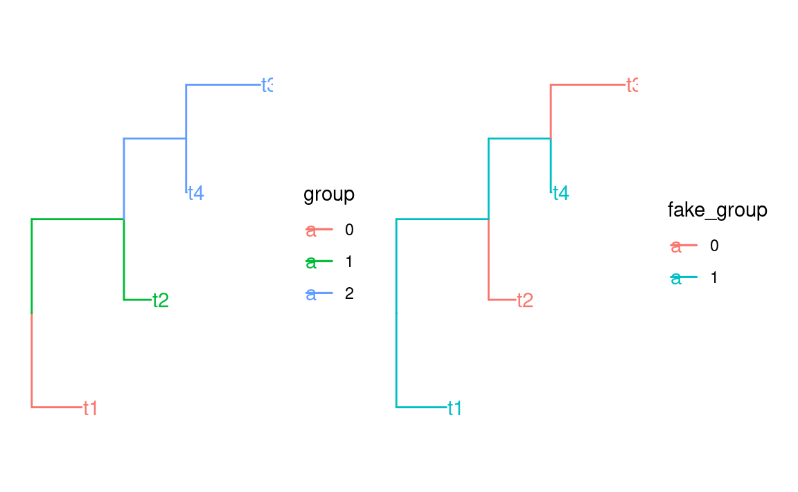
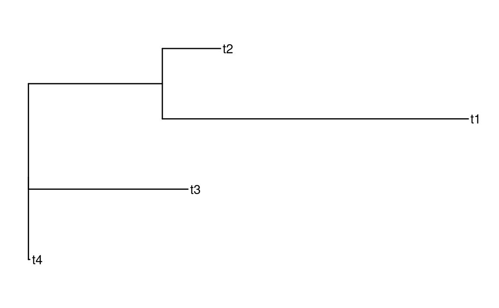
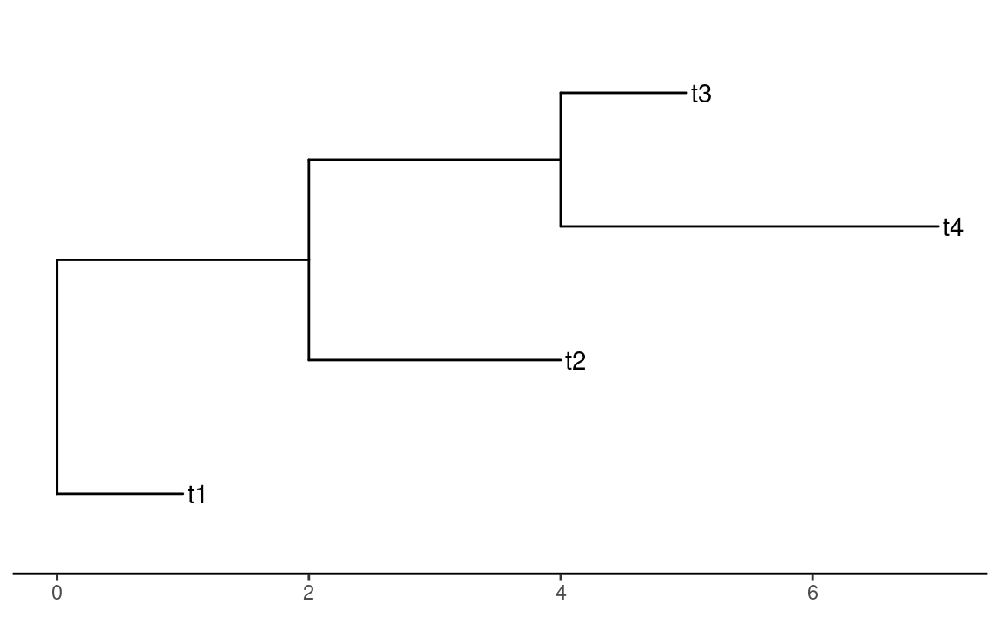
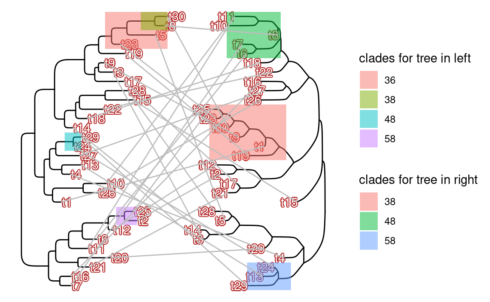

suppressMessages(library(tidyverse))
suppressMessages(library(ape))
suppressMessages(library(ggtree))
suppressMessages(library(treeio))
suppressMessages(library(tidytree))
set.seed(2026)
tree_phylo <- rtree(4)
tree_phylo
#>
#> Phylogenetic tree with 4 tips and 3 internal nodes.
#>
#> Tip labels:
#> t1, t2, t4, t3
#>
#> Rooted; includes branch length(s).
class(tree_phylo)
#> [1] "phylo"
tbl_tree <- as_tibble(tree_phylo)
tbl_tree
#> # A tbl_tree abstraction: 7 × 4
#> # which can be converted to treedata or phylo
#> # via as.treedata or as.phylo
#> parent node branch.length label
#> <int> <int> <dbl> <chr>
#> 1 5 1 0.466 t1
#> 2 6 2 0.253 t2
#> 3 7 3 0.00593 t4
#> 4 7 4 0.692 t3
#> 5 5 5 NA <NA>
#> 6 5 6 0.861 <NA>
#> # ℹ 1 more row
tree_data <- as.treedata(tbl_tree)
tree_data
#> 'treedata' S4 object'.
#>
#> ...@ phylo:
#>
#> Phylogenetic tree with 4 tips and 3 internal nodes.
#>
#> Tip labels:
#> t1, t2, t4, t3
#>
#> Rooted; includes branch length(s).
#>
#> with the following features available:
#> ''.
#>
#> # The associated data tibble abstraction: 7 × 3
#> # The 'node', 'label' and 'isTip' are from the phylo tree.
#> node label isTip
#> <int> <chr> <lgl>
#> 1 1 t1 TRUE
#> 2 2 t2 TRUE
#> 3 3 t4 TRUE
#> 4 4 t3 TRUE
#> 5 5 <NA> FALSE
#> 6 6 <NA> FALSE
#> 7 7 <NA> FALSEggtree——处理数据
ggtree
与ggtree包相关的R包由很多，本节主要介绍treeio，tidytree两个R包。它们用来对读取树文件，生成树对象，以及操作树对象。更多有关树的读取与操作可以参考ape包与phytools包。
本节及后序小节的内容主要来源于ggtree书中的第1-2，4-7，10，12章。
树文件格式
树文件的格式有多种，常见的有三种：Newick，NEXUS，Phylip。
Newick
仅包含最基本的树结构，树结构特点：
- 使用括号
()表示嵌套的分支关系。 - 用逗号
,分隔同级子节点。 - 用冒号
:后接数字表示分支长度。 - 整棵树以分号
;结尾。
((t2:0.04,t1:0.34):0.89,(t5:0.37,(t4:0.03,t3:0.67):0.9):0.59);NEXUS
由许多模块化结构（block）组成，每个block以BEGIN开始，以END;结束，旨在将树信息与meta信息统合在一起。
#NEXUS
BEGIN TAXA;
DIMENSIONS NTAX=4;
TAXLABELS SpeciesA SpeciesB SpeciesC SpeciesD;
END;
BEGIN CHARACTERS;
DIMENSIONS NCHAR=6;
FORMAT DATATYPE=DNA MISSING=? GAP=-;
MATRIX
SpeciesA ATGCGT
SpeciesB ATGAGT
SpeciesC ACGCGT
SpeciesD TTGCGT
;
END;
BEGIN TREES;
TREE tree1 = (SpeciesA:0.1,SpeciesB:0.2,(SpeciesC:0.3,SpeciesD:0.4):0.5);
END;Phylip
主要用于存储多序列比对（MSA）数据，供构建系统发育树使用。其结构特点：
- 第一行：两个整数，分别表示序列数量和序列长度。
- 后续每行：一个最多10个字符的序列名 + 空格 + 序列本身。
- 序列名不足10字符时需用空格补齐（严格对齐）。
4 6
SpeciesA ATGCGT
SpeciesB ATGAGT
SpeciesC ACGCGT
SpeciesD TTGCGT数据类型
使用treeio读取树文件后，可以生成三种对象类型，这三种都可以被ggtree处理：
phylo：是最基本的对象类型，由ape提供。tbl_tree：一个tibble格式的数据框，方便使用tidyverse系列的函数进行操作，囊括了树的最基本信息，也可以追加其他相关信息。treedata：将phylo对象与树相关的信息（数据框）组合起来就是treedata，由treeio提供。
三种对象可以相互转换：as_tibble(), as.phylo(), as.treedata()。
操作树对象
获取子树
tidytree提供了一些函数用来提取一个子树：
-
child()：获取某个node的下一级所有节点。 -
offspring()：获取某个node的所有下属节点。 -
parent()：获取某个node的上一级所有节点。 -
ancestor()：获取某个node的所有祖先节点。 -
sibling()：获取某个node的同一级所有节点。 -
MRCA()：获取某些nodes的最近共同祖先。 -
tree_subset()：获取某个节点的前，由参数定义层级的所有节点。 -
drop.tip()：丢弃某些tip。
# 适配三种对象类型
child(tbl_tree, 5)
#> # A tibble: 2 × 4
#> parent node branch.length label
#> <int> <int> <dbl> <chr>
#> 1 5 1 0.466 t1
#> 2 5 6 0.861 <NA>
offspring(tbl_tree, 5)
#> # A tibble: 6 × 4
#> parent node branch.length label
#> <int> <int> <dbl> <chr>
#> 1 5 1 0.466 t1
#> 2 6 2 0.253 t2
#> 3 7 3 0.00593 t4
#> 4 7 4 0.692 t3
#> 5 5 6 0.861 <NA>
#> 6 6 7 0.581 <NA>
parent(tbl_tree, 2)
#> # A tibble: 1 × 4
#> parent node branch.length label
#> <int> <int> <dbl> <chr>
#> 1 5 6 0.861 <NA>
ancestor(tbl_tree, 2)
#> # A tibble: 2 × 4
#> parent node branch.length label
#> <int> <int> <dbl> <chr>
#> 1 5 5 NA <NA>
#> 2 5 6 0.861 <NA>
sibling(tbl_tree, 2)
#> # A tibble: 1 × 4
#> parent node branch.length label
#> <int> <int> <dbl> <chr>
#> 1 6 7 0.581 <NA>
MRCA(tbl_tree, 2, 3)
#> # A tibble: 1 × 4
#> parent node branch.length label
#> <int> <int> <dbl> <chr>
#> 1 5 6 0.861 <NA>
# 不适配 tbl_tree
# tree_subset(tree_data, node = 5, levels_back = 0)
tree_s <- tree_subset(tree_phylo, node = "t4", levels_back = 2)
tree_s
#>
#> Phylogenetic tree with 3 tips and 2 internal nodes.
#>
#> Tip labels:
#> t2, t4, t3
#>
#> Rooted; includes branch length(s).
tree_d <- drop.tip(tree_phylo, "t3")
tree_d
#>
#> Phylogenetic tree with 3 tips and 2 internal nodes.
#>
#> Tip labels:
#> t1, t2, t4
#>
#> Rooted; includes branch length(s).tree_subset()的提取方式——数竖线；在提取的同时会默认将该node的offspring节点归为一组，其他归为另一组，并添加group信息。
p1 <- ggtree(tree_phylo) + geom_tiplab()
p2 <- ggtree(tree_s, aes(color = group)) + geom_tiplab()
p3 <- ggtree(tree_d) + geom_tiplab()
plot_list(p1, p2, p3)
合并树
treeio::merge_tree()只能合并拓扑结构相同但附属信息不同的树，无法合并拓扑结构不同的树。
tree1 <- read.tree(text = "((A:0.1,B:0.2):0.3,(C:0.4,D:0.5):0.6);")
# tree3 <- read.tree(text = "((A:0.1,B:0.2):0.3,(C:0.4):0.6);")
tree2 <- read.tree(text = "((B:0.15,C:0.25):0.35,(E:0.45,F:0.55):0.65);")
merge_tree(tree1, tree2)
#> Error in `merge_tree()`:
#> ! input tree object is not supported...追加相关meta信息
tidytree::full_join()可以将相关meta信息与树进行合并，适配所有对象类型。
# 添加额外信息
dat <- tibble(label = paste0("t", 1:4), trait = rnorm(4))
full_join(tbl_tree, dat, by = "label")
#> # A tbl_tree abstraction: 7 × 5
#> # which can be converted to treedata or phylo
#> # via as.treedata or as.phylo
#> parent node branch.length label trait
#> <int> <int> <dbl> <chr> <dbl>
#> 1 5 1 0.466 t1 -0.735
#> 2 6 2 0.253 t2 -1.02
#> 3 7 3 0.00593 t4 -0.474
#> 4 7 4 0.692 t3 0.114
#> 5 5 5 NA <NA> NA
#> 6 5 6 0.861 <NA> NA
#> # ℹ 1 more rowtidytree::groupClade()与tidytree::groupOTU()分别用来根据“枝”或“tip”来进行分组。
treeClade <- groupClade(tbl_tree, c(6, 7))
treeClade
#> # A tbl_tree abstraction: 7 × 5
#> # which can be converted to treedata or phylo
#> # via as.treedata or as.phylo
#> parent node branch.length label group
#> <int> <int> <dbl> <chr> <fct>
#> 1 5 1 0.466 t1 0
#> 2 6 2 0.253 t2 1
#> 3 7 3 0.00593 t4 2
#> 4 7 4 0.692 t3 2
#> 5 5 5 NA <NA> 0
#> 6 5 6 0.861 <NA> 1
#> # ℹ 1 more row
p1 <- ggtree(as.treedata(treeClade), aes(color = group)) + geom_tiplab()
treeOTU <- groupOTU(tbl_tree, c("t1", "t4"), group_name = "fake_group")
treeOTU
#> # A tbl_tree abstraction: 7 × 5
#> # which can be converted to treedata or phylo
#> # via as.treedata or as.phylo
#> parent node branch.length label fake_group
#> <int> <int> <dbl> <chr> <fct>
#> 1 5 1 0.466 t1 1
#> 2 6 2 0.253 t2 0
#> 3 7 3 0.00593 t4 1
#> 4 7 4 0.692 t3 0
#> 5 5 5 NA <NA> 1
#> 6 5 6 0.861 <NA> 1
#> # ℹ 1 more row
p2 <- ggtree(as.treedata(treeOTU), aes(color = fake_group)) + geom_tiplab()
plot_list(p1, p2)
将树相关的meta信息可以被绘制到树中，增加图片信息丰度。
修改树的根节点或枝长
root()会将outgroup排除后，重新计算根节点。
tree_rer <- root(tree_phylo, outgroup = "t3")
ggtree(tree_rer) + geom_tiplab()
treeio::rescale_tree()可以根据treedata格式中的numeric列重新定义枝的长度。
tree_rel <- tbl_tree
tree_rel$new.length <- c(1, 2, 3, 1, NA, 2, 2)
ggtree(rescale_tree(as.treedata(tree_rel), "new.length")) +
geom_tiplab() +
theme_tree2()
绘图数据
可以使用ggtree(tree)$data或fortify()两种方式生成适配geom_tree()函数的数据，这在生成复杂图形及其有用。
set.seed(1024)
x <- rtree(30)
y <- rtree(30)
p1 <- ggtree(x, layout = "roundrect") +
geom_tiplab(geom = "shadowtext", bg.colour = alpha("firebrick", .5)) +
geom_hilight(
mapping = aes(
subset = node %in% c(38, 48, 58, 36),
node = node,
fill = as.factor(node)
)
) +
labs(fill = "clades for tree in left")
p2 <- ggtree(y)
d1 <- p1$data
d2 <- p2$data
## reverse x-axis and
## set offset to make the tree on the right-hand side of the first tree
d2$x <- max(d2$x) - d2$x + max(d1$x) + 1
pp <- p1 + geom_tree(data = d2, layout = "ellipse") +
geom_tiplab(data = d2, hjust = 1, geom = "shadowtext", bg.colour = alpha("firebrick", .5)) +
ggnewscale::new_scale_fill() +
geom_hilight(
data = d2,
mapping = aes(
subset = node %in% c(38, 48, 58),
node = node,
fill = as.factor(node)
)
) +
labs(fill = "clades for tree in right")
dd <- bind_rows(d1, d2) %>%
filter(!is.na(label))
pp + geom_line(aes(x, y, group = label), data = dd, color = "grey")